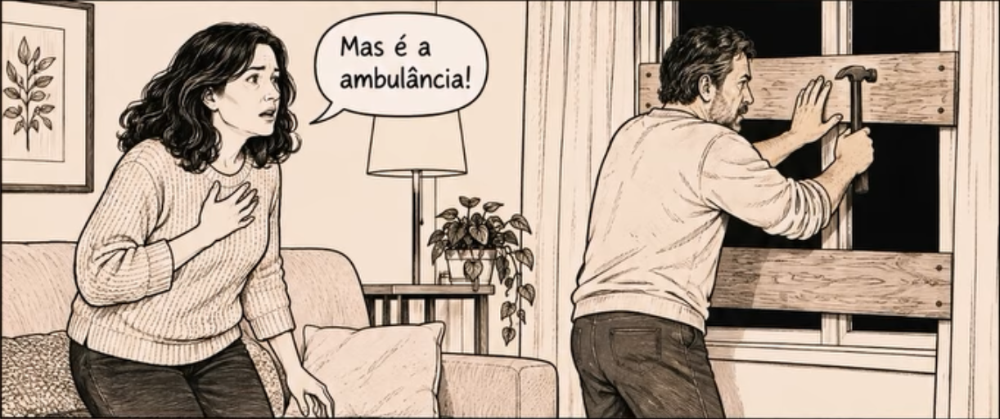

Ouvir uma sirene que não existe. Escuta sem nada lá fora.
A sirene existe, mas soa como outra coisa: alguém chamando o seu nome.
A sirene existe e foi ouvida certo. Errada é a certeza: vieram me pegar, e você está com eles. Mesmo com a ambulância passando, a certeza fica.